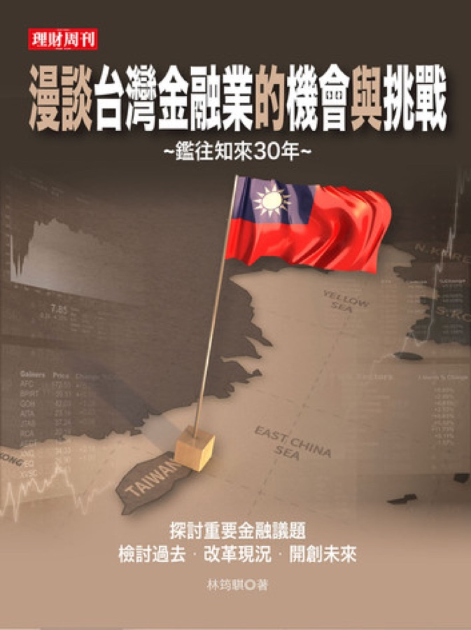

作品彙整
Business Insider Taiwan
- 花蓮慈濟醫院攜手博太生醫 要用植物藥攻克失智症
- 「武醫」何宗融心繫家鄉醫療情 60歲返鄉轉戰義大癌治療醫院 成立精準中西醫合療中心
- 壯年返鄉的溫柔革命：他帶回「跨域經驗」重整雲林石壁推農禪生活 如何靠櫻花、竹林與 GABA 茶翻轉故鄉？
- 不只是賣雞肉！大成配息創歷史新高 70年老店如何靠「生技引擎」鎖定未來成長？
- 崇越科技營收、EPS創新高！ AI帶動先進製程需求 加速轉型供應鏈整合服務商
- 從 5 千台到 200 萬台的 16 年長征：看振曜科技如何在最慘出版業年代 押注出電子紙的結構性優勢
- 專訪儒鴻掌舵者王樹文 揭密紡織股王如何用 AI 煉金、以永續佈局 拿下全球定價權？
- 查看作者頁完整清單 →
影音作品
年出貨 200 萬台！全球最大電子書基地產線大公開
你穿的運動衣，竟藏著台灣最強科技？儒鴻董事長揭密「紡織龍頭」實力
